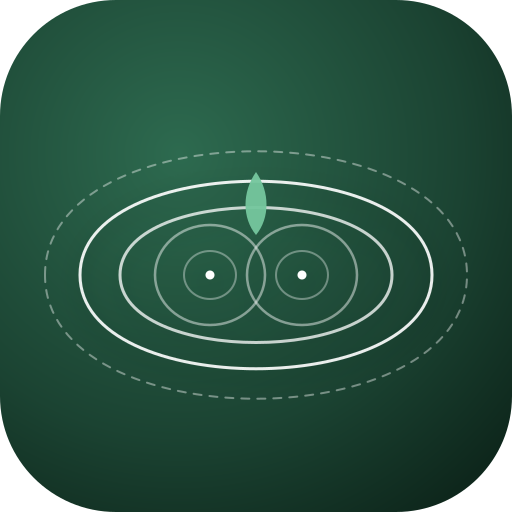
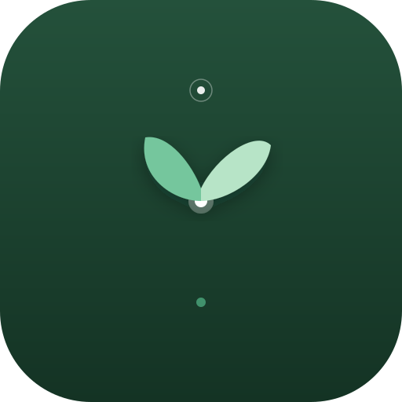

テーマ：「自然」×「シンプル」×「引き算の美学」
生成り背景に、重なり合うふたつの若葉。北欧・無印調のクリーンで温かいミニマルデザイン。

深緑に浮かぶ繊細な年輪。ふたつの核から始まり、やがてひとつの大きな環になっていく歴史。

タイムラインの縦軸と、現在地から芽吹く若葉。アプリの機能を直感的に表したモダンな構成。
ふたつの軌跡が美しく交差し、中央に光の葉を結ぶ幾何学的で洗練されたモダンデザイン。
鮮やかなセージグリーンに、ぽっくりとした白い双葉。視認性が最も高く親しみやすいアイコン。